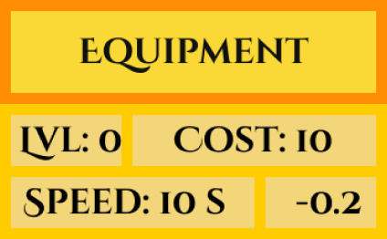

Silver Pennies, or SP, are the primary coin in this game.
You gain them automatically by 10 seconds.
You can increase the number and speed by buying upgrades, as explained below.
By buying upgrades, you can increase the speed and number at which you gain SP:
The "Equipment" upgrade multiplies your speed by 0.98.
The "Miners Count" upgrade halves your speed.
The "Ore Price" upgrade adds 1 to your gain.
The "Ore Purity" upgrade adds 1 to your gain.

Every upgrade has the following elements:
The name, telling you what you're upgrading. In the image: "Equipment"
The level, indicating how many times you've bought this upgrade. In the image: "Lvl: 0"
The cost, telling you how much the next level will cost. In the image: "Cost: 10"
The modifier, telling you what you're upgrading, and what that modifier currently is. In the image: "Speed: 10 s"
The bonus, telling you how much the modifier will change when you the next level. In the image: "-0.2"